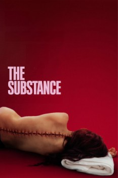

The Substance (2024)


Become a better you.

País:Reino Unido, 141 minutos.
Idiomas:Inglés
GénerosTerror, Ciencia Ficción
Director/es:Coralie Fargeat
Guionistas:Coralie Fargeat
Códec de vídeo:Unknown
Número: 690
TomatoMeter:

--

--
Clasificación IMDb:


7.3/10 (4.4K votos)
Certificación:
Argumento:
A fading celebrity decides to use a black market drug, a cell-replicating substance that temporarily creates a younger, better version of herself.
Reparto
Demi Moore (Como Elisabeth), Margaret Qualley (Como Sue), Dennis Quaid (Como Harvey), Edward Hamilton-Clark (Como Fred), Gore Abrams (Como Oliver)
Medio: Archivo de video,
Localización: D:\PELICULAS\AÑO\2024\La Sustancia [2024].mp4
Prestado: No
Rel. aspecto: Unknown